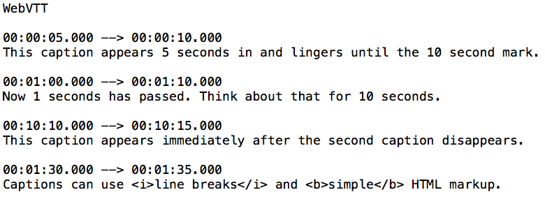

A VTT file is a text file saved in the Web Video Text Tracks (WebVTT) format. It contains supplementary information about a web video, including subtitles, captions, descriptions, chapters, and metadata.

:current
selector is called a "time-dimensional" pseudo-class that represents
the element, or an ancestor of the element, that is currently being
displayed.
Examples:
- selecting a time-dimensional relative element during a speech rendering
- displaying video subtitles
::cue
is a pseudo-element that matches WebVTT cues (subtitle text) within a selected element
Examples:
- may be used to style captions
The properties are applied to the entire set of cues as if they were a single unit. The only exception is that background and its longhand properties apply to each cue individually, to avoid creating boxes and obscuring unexpectedly large areas of the media.